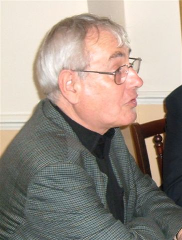

|
 |
VIce-President Tony Baines A retired primary school headmaster, Tony was Federation Secretary from 2002 to 2011. He is presently Treasurer of the Stafford RMS. Musically,
he would retire to a desert island with J S Bach's complete works for
solo violin and cello, and the complete works of Beethoven—and, his
not so secret passion, the entire output of Hector Berlioz. |